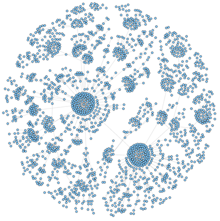

NoSQL Graphes
Découvrir les bases NoSQL orientées graphes avec Neo4j

Created by Kevin Biger / @kevin_biger
NoSQL Kezako
Not Only SQL
NoSQL Kezako
4 grandes familles
NoSQL
Columns
Cassandra, HTable, BigTable...
Bases OLAP
requêtes larges sur des propriétés spécifiques
NoSQL
Key Value
Redis, Riak...
Grosse table de hashage
NoSQL
Document
MongoDB, CouchDB, DocumentDB...
La même chose que les KVStore mais en plus organisé
Une grosse TreeMap
NoSQL
Graph
Neo4j, OrientDB...
Agregats
“Use aggregate-oriented databases when you are manipulating clear aggregates (especially if you are running on a cluster) and use graph databases (or a relational database) when you want to manipulate that data in different ways. -- Martin Fowler”
Agrégats
- KVstores
- documentstores
- columnstores
Pas d'agrégats
- Bases graphes
- RDBMs
pas de sharding
Dimensions
Dimensions
OLAP cube
Dimensions
Graphe à plusieurs dimensions!
GrapheDB
-

Neo4j
-

OrientDB
-

Cayley
- Sparksee (DEX)
- InfiniteGraph
- AllegroGraph
- Ontotext GraphDB
- ...
Graphes
Des nœuds et des relations
Modelisation avec des graphes
Neo4j
Drivers
- Rest
- Bolt
- Java
- Javascript
- Python
- ...